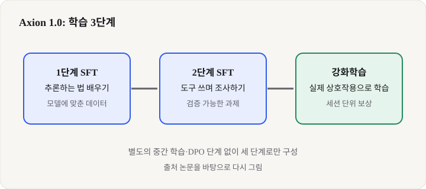
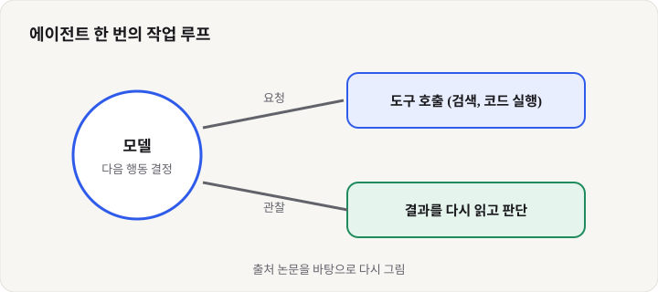

Axion 1.0: 적은 예시로 에이전트를 가르치는 오픈 모델, 입문 개발자가 알아야 할 것
- ByteDance 연구진이 공개한 오픈 에이전트 모델 Axion 1.0이 논문과 함께 나왔고, 35B와 122B 두 크기가 있다.
- 약 1만 8천 개 수준의 적은 학습 예시로 지도 학습 두 단계와 강화학습만 거쳐 도구를 쓰는 능력을 키웠다고 한다.
- 입문 개발자에게는 "큰 데이터보다 좋은 학습 순서"가 중요하다는 점을 보여 주는 사례다.
요즘 AI 화제는 "얼마나 똑똑한가"에서 "얼마나 스스로 일을 끝내는가"로 옮겨 가고 있습니다. 검색을 하고, 코드를 돌려 보고, 결과가 틀리면 다시 시도하는 모델을 흔히 에이전트라고 부릅니다. 이번 주 개발자 커뮤니티에서는 ByteDance가 이런 에이전트 모델을 논문과 함께 공개했다는 소식이 Latent Space 같은 뉴스레터와 학계 공유 사이트를 타고 퍼졌습니다. 특히 학습 방법을 공개했다는 점이 눈에 띕니다.
01한눈에 보기
에이전트 모델을 신입 직원에 비유해 볼게요. 좋은 신입을 만들려면 방대한 자료를 밀어 넣기보다, 업무 요령을 몇 단계로 나눠 차근차근 가르치는 편이 효과적일 때가 많습니다. Axion 1.0은 바로 이 방식을 택했습니다. 먼저 생각하는 법을 가르치고, 다음으로 검색 같은 도구를 쓰며 문제를 푸는 법을 가르친 뒤, 마지막으로 실제로 여러 번 행동해 보며 보상을 받아 다듬습니다. 논문 설명에 따르면 이 과정에서 별도의 중간 학습 단계나 선호도 최적화(DPO) 단계는 쓰지 않았습니다.

강화학습(RL): 행동의 결과에 점수를 주고, 점수가 높아지는 쪽으로 모델을 조정하는 학습입니다. 게임에서 점수를 올리며 요령을 익히는 것과 같습니다.
MoE(혼합 전문가): 모델 안에 여러 전문 조각이 있고 질문마다 일부만 골라 쓰는 구조입니다. 35B라고 해도 매번 전부 계산하지는 않습니다.
02어떻게 동작하나요
입력에서 출력까지 흐름은 세 단계로 볼 수 있습니다. 첫째, 사용자의 질문을 받으면 모델이 먼저 어떤 정보가 필요한지 생각합니다. 둘째, 필요하면 검색이나 코드 실행 같은 도구를 호출합니다. 셋째, 도구가 돌려준 결과를 읽고 충분하면 답하고 부족하면 다시 도구를 부릅니다. 이 반복 루프를 얼마나 안정적으로 돌리느냐가 에이전트의 실력입니다.

논문은 2단계 "도구 사용 학습"에서 검증할 수 있는 과제를 많이 썼다고 설명합니다. 답이 맞는지 기계적으로 확인할 수 있는 문제를 풀게 하면, 사람이 일일이 채점하지 않아도 학습 신호를 만들 수 있기 때문입니다. 마지막 강화학습은 세션 단위로 진행된다고 적혀 있습니다. 한 번의 질문에 대한 답만 보는 것이 아니라, 여러 번 도구를 쓴 전체 과정에 점수를 준다는 뜻입니다.
03왜 지금 화제인가요
논문 페이지는 2026년 11월 초에 올라왔고, 같은 주 뉴스레터 Latent Space는 오픈 모델 경쟁을 다루며 이 모델을 함께 언급했습니다. 커뮤니티 반응의 핵심은 두 가지로 보입니다. 하나는 "18K 수준의 예시로도 된다"는 학습 효율 주장이고, 다른 하나는 학습 레시피를 공개했다는 점입니다. 다만 아래 반응은 요약 기사 기준이며, 원문 댓글 전체를 직접 확인하지는 못했습니다.
04관련 나라·기업
| 구분 | 이름 | 어떤 관련이 있나 |
|---|---|---|
| 기업 | ByteDance | 모델과 학습 레시피를 낸 개발 주체입니다(논문 공동 저자 소속 기준). |
| 기업 | Hugging Face | 논문 페이지와 모델 파일이 올라가 있는 공유 플랫폼입니다. |
| 나라 | 중국 | ByteDance의 본사 소재지입니다. |
| 나라 | 미국 | 공저자 일부가 미국 대학 소속입니다. |
05기존 방식과 무엇이 다른가
| 비교 항목 | 기존 흔한 방식 | Axion 1.0 |
|---|---|---|
| 학습 데이터 | 대규모 데이터로 중간 학습을 먼저 함 | 약 1만 8천 개 수준의 SFT 예시 중심(논문 설명) |
| 선호도 조정 | DPO 같은 선호도 최적화를 자주 사용 | DPO와 온폴리시 증류를 쓰지 않았다고 명시 |
| 학습 단위 | 한 번의 답변 단위 보상이 흔함 | 여러 번 도구를 쓴 세션 전체에 보상 |
06직접 해 보기
직접 모델을 학습시키기는 입문자에게 무겁습니다. 대신 오늘은 "에이전트가 도구를 쓰는 모습"을 눈으로 확인하는 것을 목표로 해 보세요. 모델 파일은 Hugging Face의 모델 페이지에서 받을 수 있고, 논문 페이지에서 학습 단계 설명을 먼저 읽는 것을 권합니다. 아래 명령은 Hugging Face 공식 CLI 도구의 기본 사용법이며, 실행 전에 모델 페이지의 사용 조건과 라이선스를 확인하세요.
pip install -U "huggingface_hub"
huggingface-cli download Axion1-0/Axion-1.0-35B --local-dir ./axion-1.0-35b다운로드 후에는 모델 카드에 적힌 실행 방법을 따르세요. 35B 모델은 용량이 크므로, 먼저 디스크 여유 공간과 GPU 메모리를 확인하는 것이 좋습니다.
07주의할 점과 한계
- 벤치마크 수치는 논문 표 기준과 재현 체크포인트 댓글의 수치가 서로 달라, 정확한 값은 논문 PDF에서 다시 확인해야 합니다.
- 라이선스는 재현 체크포인트에 Apache 2.0이라고 적힌 댓글이 있으나, 모델 카드의 공식 표기를 직접 확인하지 못했습니다. 상업 사용 전에는 반드시 원문을 보세요.
- "1만 8천 개 예시면 충분하다"는 말은 좋은 기반 모델 위에서 성립하는 이야기입니다. 처음부터 모델을 만드는 상황과는 다릅니다.
- 에이전트는 도구를 잘못 쓰면 틀린 결과를 자신 있게 낼 수 있어, 실제 서비스에는 사람이 확인하는 단계를 두는 편이 안전합니다.
08정리
Axion 1.0이 주목받는 이유는 모델 크기보다 학습 순서에 있습니다. 많은 데이터를 쌓기보다, 생각하기와 도구 쓰기와 실전 보상을 차례로 설계하면 작은 예산으로도 에이전트 능력을 끌어올릴 수 있다는 가능성을 보여 줍니다. 입문 개발자라면 이 글을 "에이전트는 어떻게 훈련되는가"를 이해하는 출발점으로 삼으면 좋습니다.
다만 아직 독립적인 재현 결과와 공식 라이선스 확인은 더 필요합니다. 오늘은 논문 표지와 학습 단계만 정리하고, 직접 실행해 보기 전에 모델 카드와 논문 PDF를 함께 읽어 보세요.
09참고한 글
- Axion 1.0: Open Agent Foundation Models, Simplified (Hugging Face Papers) Hugging Face · 2026.11.04 제출
- Axion 1.0 — Open Agent Foundation Models, Simplified (프로젝트 페이지) axion1-0.github.io · 날짜 미표기
- It's Swapping Season — Latent Space Latent Space · 2026.11.04 기준